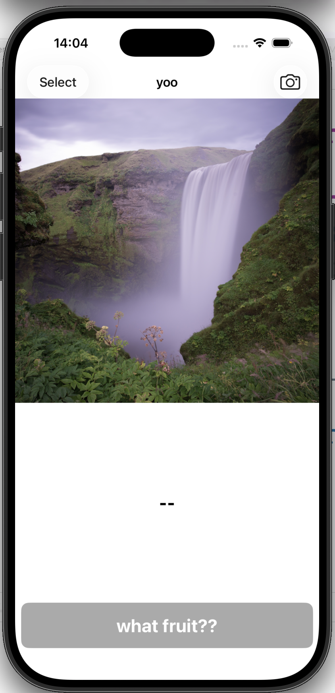

ML Two
Lecture 05
🤗Object detection with CreateML + Live Capture App😎
Welcome 👩🎤🧑🎤👨🎤
First of all, don't forget to confirm your attendence on
Seats App! and another AI-related
cool project to wake us up one more time
our previous classification app:

it works on a single static image
it works on live capture "video" in real time!!!
after today's lecture:
-- object detection: how to prepare the dataset, how to train the ML model 🤖
-- a live capture app on your phone that recognises sea creatures 🦈
What's the difference between a static image, a static video, a live capture video?
on digital devices, video is nothing more than a sequence of images(frames)
=>
most video processings eventually boil down to good old image processings
=>
all the image-based AIs in our toolbox are ready to go for video processing
One key difference between static video and live capture video is that static video is pre-recorded📽️🎞️, while live capture video is captured in real-time📸🤳
pre-recorded video: a fixed set of frames
vs.
live capture video: a dynamic set of frames that keeps flowing in
real-time processing is an interesting topic (think about digital music instrument)
where processing speed imposes bottleneck for how "real time" the output is
In Apple framework, we have AVFundation doing live capture for us
and we are counting on CoreML and optimised chips to have fast AI computation that brings smooth real time experience rather than
laggging
Let's play with the
app first
- Preferably run it on your phone not the simulator
- Don't forget to change the "Team" to your account under "Signings & Capabilities" tab
next: download a dataset, train our own object detection model using CreateML (no python this time), and integrate it into the app
part 1: data collection
CreateML has its own data format for training, check it out
here
To save us some headaches from finding data, annotating and formatting
introduce...
roboflow
These datasets are annotated, split and you can choose to download from a range of formats including CreateML format 🥰
15 mins browsing this dataset library, find one dataset that you like
take a note of:
-- how many images are there?
-- what are the classes available?
-- have you seen the annotation window?
-- does each image have the same dimension?
Why dataset is split into training/validation/testing sets for training a machine learning model?
Validation, evaluation and testing are similar notions.
- They all seek to answer this question "how does my model perform on *unseen* data?"
- *unseen* = not part of training
The keyword to model performance is *generalizability* which can only be evaluated on unseen data.
- using a set for training or even just hyper parameter searching will "pollute" its unseenness
-- ☝️we need valiadation set for monitoring performance during training
-- ✌️we need testing set for selecting the best model after training
-- 👌we need evaluation set for evluating the final best model
let's try the aquarium dataset on Roboflow! (I'll demo)
1. Go to the dataset home page
2. Click on the "dataset" tab (NOT THE "images" tab) on the left side bar.
3. Select "Create ML JSON" tag.
4. Click the "Download Dataset".
CreateML time!
your turn:
--1. add train/val/test data folder into the data sources
--2. select "transfer learning"
--3. enter a smaller number of iteration (e.g. 1k)
this is just for lecture demonstration purpose, in practice you can try a larger number of iterations
--4. fire off the training!!!
🎉
Next: In CreateML, preview the result and export the model
what does I/U mean?
it is a metric for measuring the similarity of two bounding boxes (the groudtruth box and the box predicted by the newbie AI)
15 mins read
here
-- what does I/U 50% mean?
Next: import the model to our live capture APP in Xcode and change this line:
- line 24 in the file "VisionObjectRecognitionViewController".
- change the model url name "ObjectDetector" in line 24 to your model class name!
- build the APP on your phone and play!
final question 1: from the entire pipeline
-- data collection -- training -- integration
where do we specify the target classes information?
-- They are prepared and specified in the "data collection" part!
final question 1: can you think of possible extension/modification of this app to do some cool AR stuff?
🔥
✊
20-30 mins lil exercise:
-- select another dataset on Roboflow and download
-- train an abject detector using CreateML (enter small interation number)
-- update your app with the new model
🎉
today we talked about:
-- static vs. live capture content
-- real-time processing, computation speed as bottleneck
-- object detection datasets on Roboflow
-- object detection training using CreateML
-- object detection evaluation metric
-- integrate new model into live capture app
We'll see you after the Easter Break, same time same place! 🫡 Have a good one x